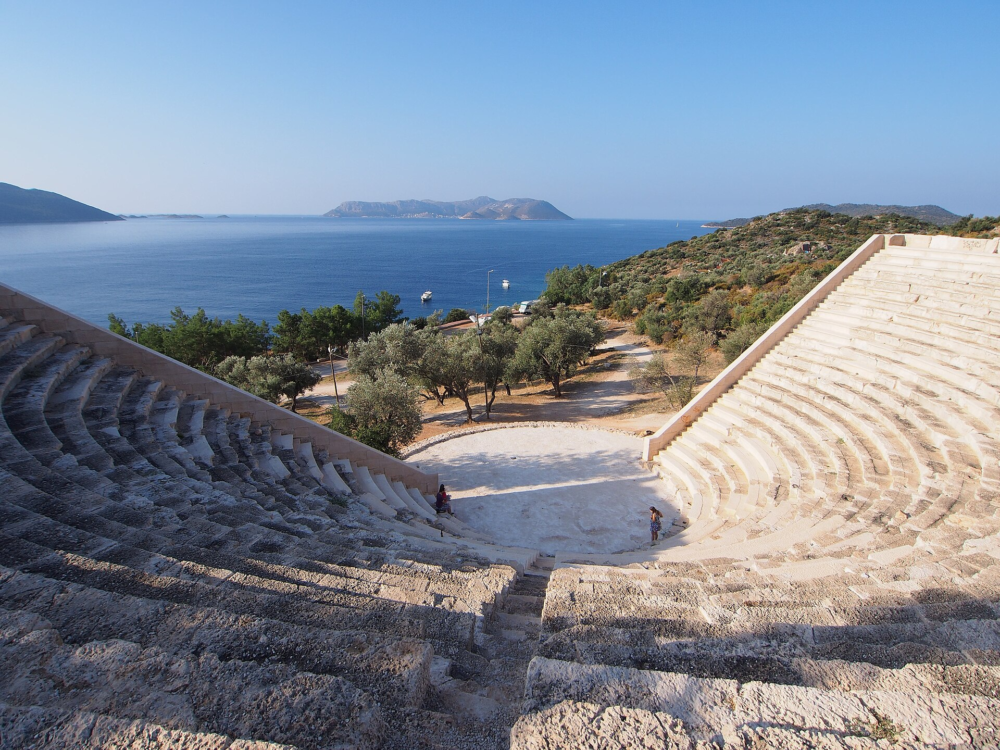
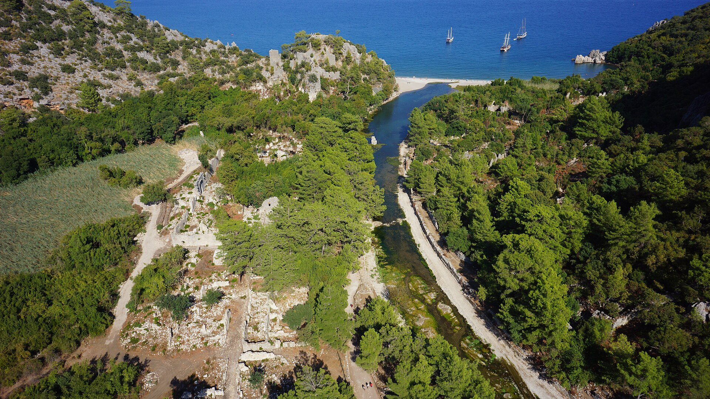
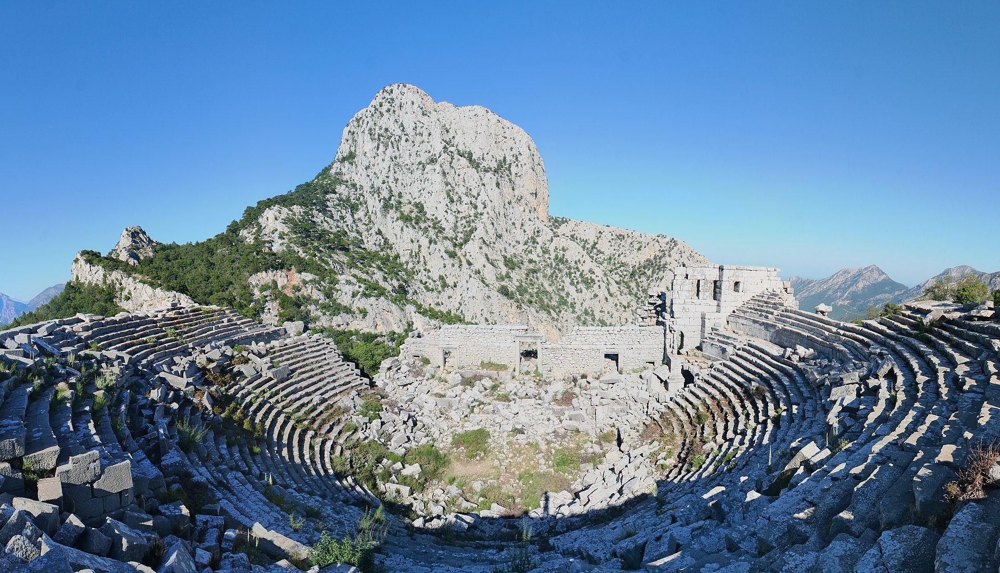
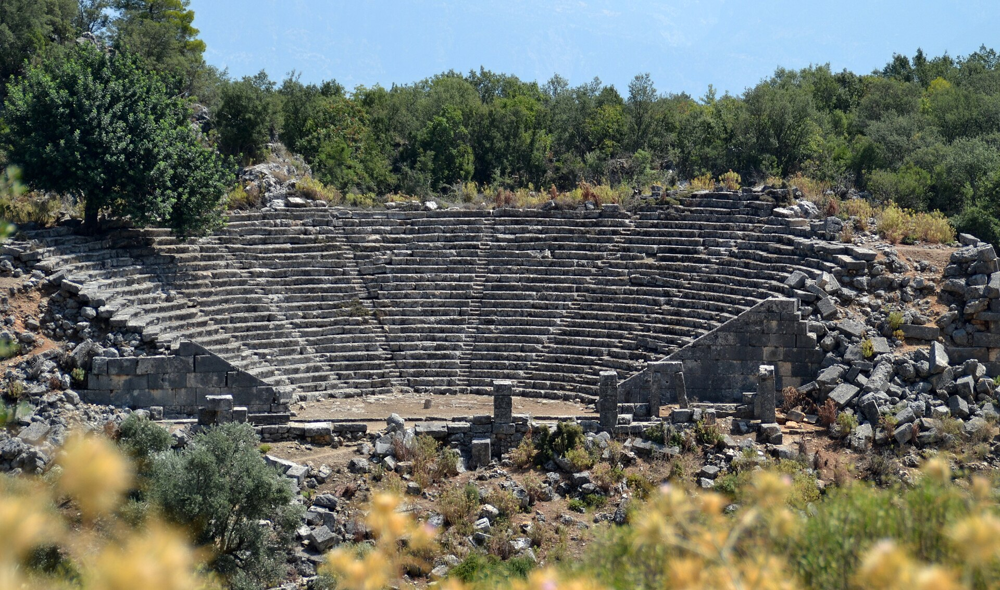
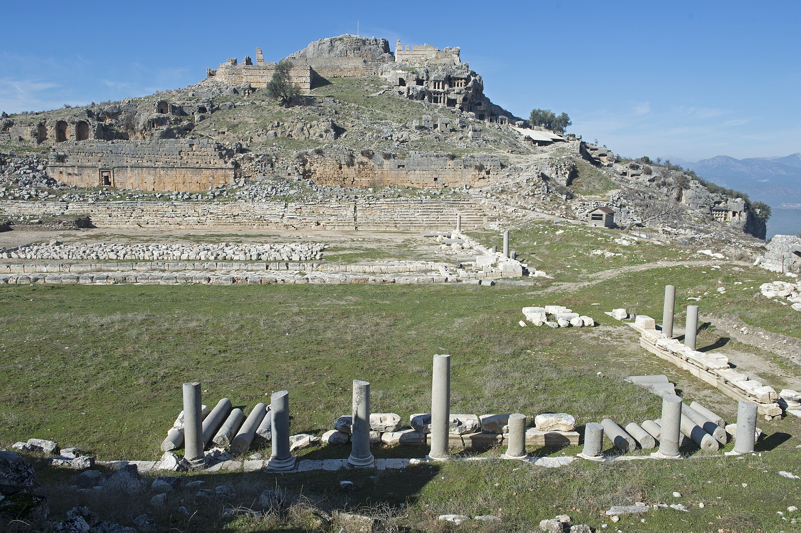
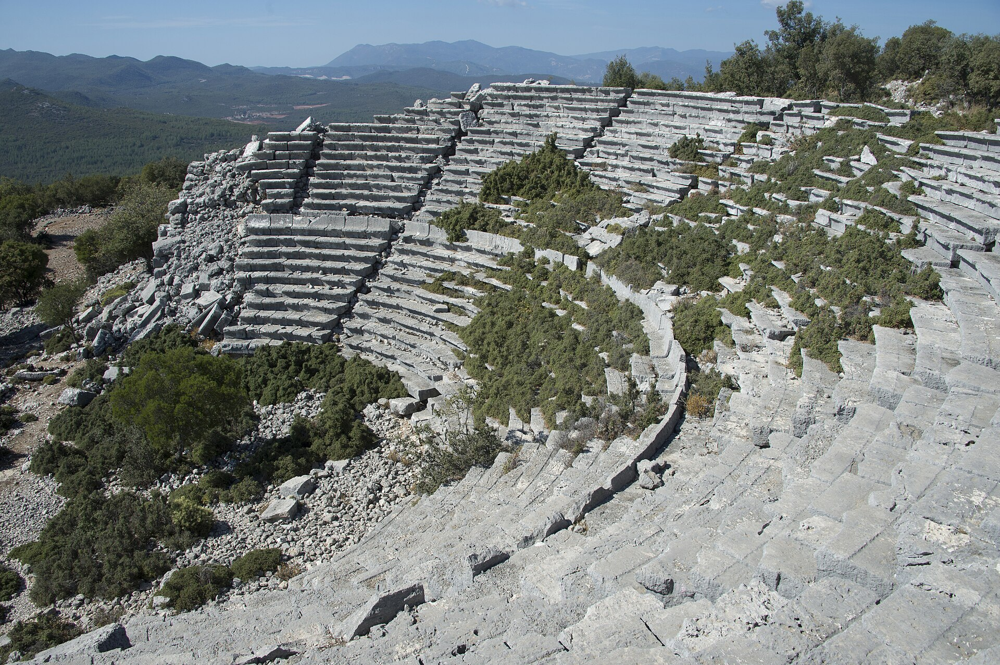
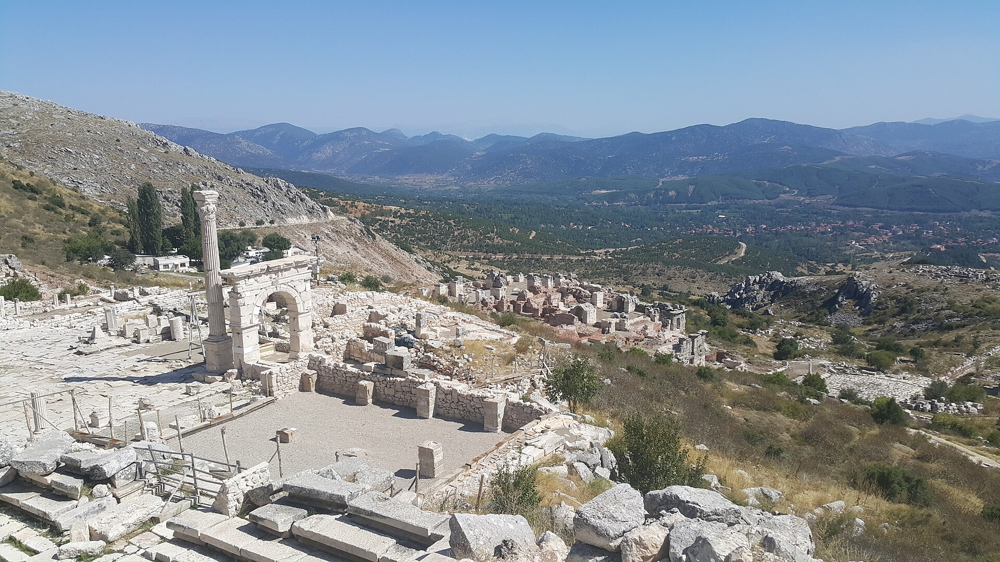

Lycia, photographed
Twelve cities, one lead image each, pulled live from Wikimedia Commons with full attribution. Each photo sits in the limestone frame we built earlier — mortar border, inset shadow, niche feel.
One photo per place
All twelve images are Creative Commons-licensed; the credit line under
each photo links to the original Commons page. Replace any of these
with your own photography by swapping the file in
assets/images/<slug>/.



_lead.jpg)








What changed
Same wall theme, same .stone-frame markup — but each
frame now holds a real photograph from Wikimedia Commons instead of
the CSS gradient placeholders. The mortar border, inset shadow,
and italic caption work identically on real images.
The next step for production would be your own photos of Kaş and the surrounding sites — same markup, same result, no attribution needed when it's your own work.
Each photo a tiny window into a stone city."